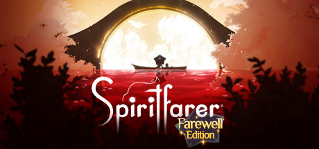
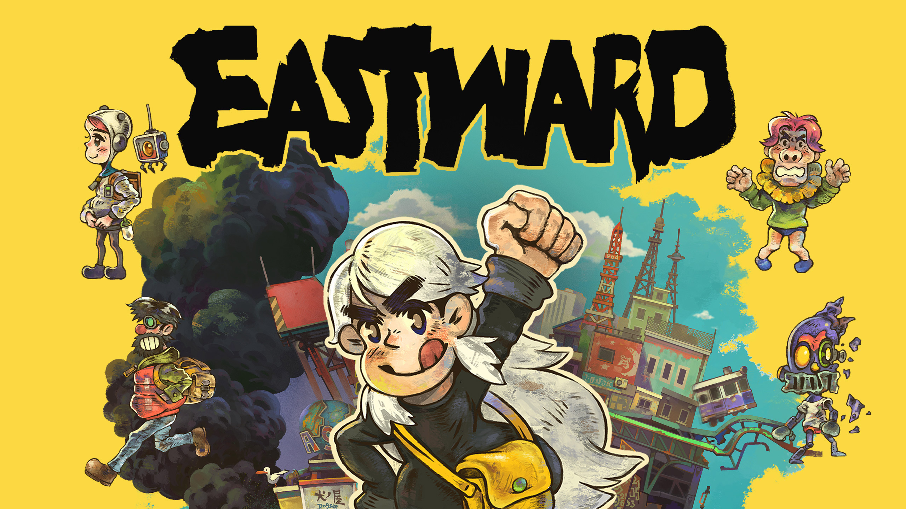

Hollow Knight: Silksong
Fecha de publicacion 01/02/2024
Desarrollado por Team Cherry, esta esperada secuela de "Hollow Knight" promete llevar a los jugadores a una nueva aventura llena de acción, exploración y desafíos. Con un arte visual impresionante, una banda sonora envolvente y un diseño de niveles meticuloso, "Hollow Knight: Silksong" promete ser una experiencia inolvidable para los amantes de los juegos de plataformas y acción.

Spiritfarer
Fecha de publicacion 01/02/2024
En "Spiritfarer", desarrollado por Thunder Lotus Games, los jugadores asumen el papel de Stella, una guía de almas que ayuda a los espíritus a pasar al más allá. Con una hermosa estética de dibujos animados, una narrativa emotiva y mecánicas de gestión de recursos, "Spiritfarer" ofrece una experiencia única de juego que te dejará reflexionando sobre la vida y la muerte.

Eastward
Fecha de publicacion 01/02/2024
Desarrollado por Pixpil, "Eastward" es una emocionante aventura RPG ambientada en un mundo post-apocalíptico donde los jugadores asumen el papel de un minero llamado John y una niña misteriosa llamada Sam. Con su encantador estilo visual retro, su emocionante historia y su jugabilidad variada, "Eastward" promete ser una experiencia inolvidable para los amantes de los juegos de rol.